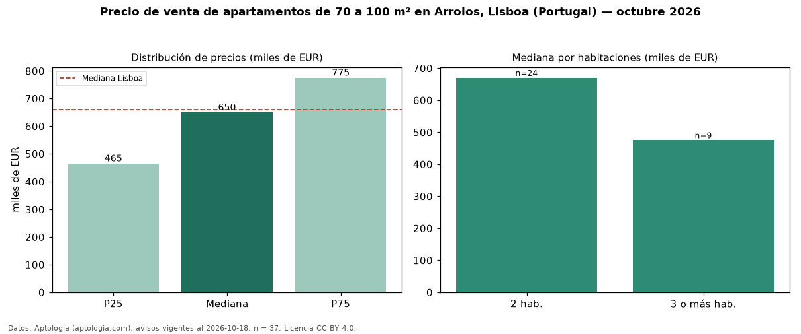

Precio de venta de apartamentos de 70 a 100 m² en Arroios, Lisboa (Portugal) — octubre 2026
Con 37 avisos vigentes, el precio mediano de apartamentos de 70 a 100 m² en venta en Arroios, Lisboa (Portugal) es EUR 650.000. Eso es 9 % más que la mediana de todos los apartamentos en venta de Arroios (EUR 599.000, n = 125); este segmento reúne el 30 % de esos avisos. Por metro cuadrado, la mediana es EUR 7.905/m² (n = 36), 14 % por encima del conjunto de referencia (EUR 6.939/m²). El área mediana anunciada es 83 m². El segmento con más oferta es el de 2 habitaciones (24 avisos, mediana EUR 670.000); pasar de 2 habitaciones a 3 o más habitaciones cambia la mediana −29 %. La mediana de todos los apartamentos en venta de Lisboa es EUR 660.000 (−2 % de diferencia). La mitad central de los avisos va de EUR 465.000 a EUR 775.000 (razón 1,7), una dispersión moderada. 27 % de los avisos con el dato declara estacionamiento o cochera. Datos: Aptología (aptologia.com), CC BY 4.0 — https://www.aptologia.com/pt/venda/lisboa/arroios. Archivos: PDF, CSV con las cifras y gráfica PNG.

| Avisos únicos | 37 |
|---|---|
| Percentil 25 | COP 465.000 |
| Mediana | COP 650.000 |
| Percentil 75 | COP 775.000 |
| Mediana por m² | COP 7.905 |
Fuente: avisos vigentes de portales inmobiliarios recopilados por Aptología, deduplicados (mínimo 30 avisos únicos por celda). Precios pedidos, no cerrados. Fecha: 2026-10-18.